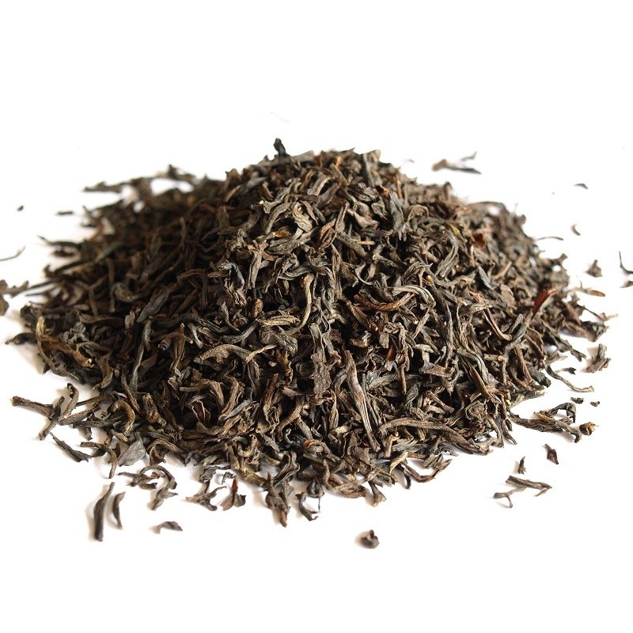

Herbaty świata
Herbata czarna

Czarną herbatę (jak i inne jej odmiany, np. herbatę białą i herbatę zieloną) pozyskuje się z młodych liści, pączków liściowych lub delikatnych łodyżek krzewu Camellia sinensis: z odmiany chińskiej (uprawy znajdują się głównie w Chinach, Japonii i Tybecie) albo assamskiej (uprawianej w Indiach, Birmie, na Półwyspie Indochińskim).
Zebrane liście poddaje się więdnięciu, skręcaniu, a następnie pełnej fermentacji (czyli przemianom enzymatycznym prowadzącym do utleniania polifenoli katechinowych) i suszeniu.
Herbatę nazywa się napojem narodowym Chin. Z początku była tam stosowana jako produkt leczniczy, później towarzyszyła mnichom buddyjskim w medytacji. W końcu trafiła pod strzechy, gdzie pomagała nabrać chińskim rolnikom sił i energii do pracy, dzięki czemu zanotowano wzrost produkcji ryżu – a to m.in. przełożyło się na niesamowity rozwój Państwa Środka. Herbata była tam tak ważnym surowcem, że stała się nawet walutą w handlu.